エネルギー等分配則，1分子計測にはとても必要な法則です．
バネの場合，
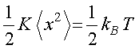
となるように，1自由度の持つ平均エネルギーは，1/2kBT，と表すことができます．
これは，運動エネルギー，位置エネルギーなどにも適用できます．
この求め方は，いろいろな方法があり，ここ，とかここ，などにも説明があります．
今回は，気体の運動エネルギーから求めてみましょう．
図のように，一辺の長さがh[m]，体積がV(=h3) [m3]，に一個の質量がm [kg]である理想気体が閉じ込められている空間を考えましょう．
ここでX軸に垂直な壁が、N個の気体分子から受ける圧力を考えます． 速度はX軸方向の速度のみを考えます．
ある一個の分子が壁に衝突するときの運動量の変化（力積）を考えます．

衝突前と後では，運動量の変化は，

のようになり，壁の衝突による運動量の変化は，
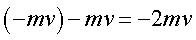
となります．
つまり，1回の衝突で気体分子が壁Ａに与える力積(運動量の変化，力×時間 と等しい)は，２ｍｖとなります．
さらに壁Ａとの衝突は気体分子が１往復（２ｈ[ｍ]）動くごとに１回起こ るから，ｔ[ｓ]間の衝突の回数は，
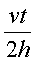
となります．
このため，壁Ａが速度ｖ[ｍ／ｓ]の気体分子からｔ[ｓ]間に受ける 力積は，
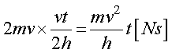
となります．
容器の中の気体分子の早さは乱雑なので、平均の速度を＜ｖ＞とし， Ｎ個の気体分子によって壁Ａがｔ[ｓ]間に受ける力は，平均の力を＜Ｆ＞ とすると，
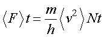
したがって，壁Ａが気体分子から受ける圧力は受けた力Ｆを壁Ａの面積，h2[m2]，で割ればよいので，
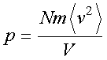
となります．変形すると，
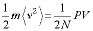
となります．
ここで，理想気体の状態方程式，
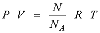
から，
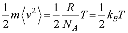
となり，等分配の法則を導き出すことができました．
ちなみに，酸素原子，O2，の場合，1分子の質量は，
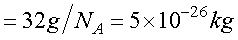
となりますので，平均速度は，
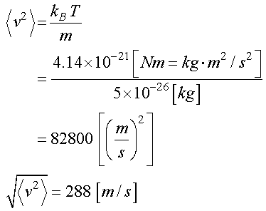
と約，秒速300ｍ，時速1,000ｋｍになることがわかります．
実際には他の分子と衝突して方向が変わるので，まっすぐ飛び続けるわけではありませんが．．．
次に，分子の運動エネルギーのボルツマン分布から求めてみましょう．